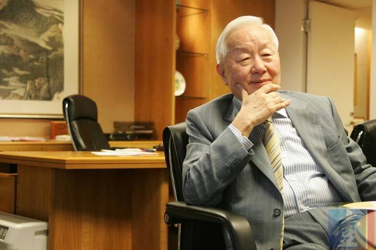

張忠謀
台灣半導體企業家
台積電創辦人
台灣工研院院士
座右銘為：「誠信正直」
關於台積電

1985年張忠謀受我國政府之邀來台擔任工業技術研究院院長。
1986年時，工業技術研究院（工研院）與荷蘭飛利浦電子公司共同簽約，正式成立半導體製造公司；時任工研院院長的張忠謀擔任台積電的董事長兼總裁，並帶領同為工研院出身的工程師共同籌辦。
1987年張忠謀56歲，由他親手擘劃推動的台灣積體電路製造股份有限公司正式開始營運，自此開創了全球專業積體電路製造服務模式，只專注於生產由客戶所設計的晶片，本身沒有自有品牌產品，不與客戶競爭；不只確保其全球第一大、最具競爭力專業積體電路製造服務公司的地位，還促成了全球無晶圓廠IC 設計產業的崛起。台積電秉持「技術領先、卓越製造、客戶信任」三位一體的競爭優勢，協助全球創新者將其構想落實於產品中。
張忠謀的管理精粹
- 張忠謀最愛說：“大策略看市場，小策略看對手”。
- “只做代工，不與客戶競爭的永續性原則”是張忠謀為企業立的信條。
- 身為領頭羊，張忠謀指出：“每件事都是經理人的當務之急。”
- 媒體評論張忠謀：“他是一個讓對手發抖的人物”。
- 關於未來，張忠謀說：“今天成功，不代表 5 年、10 年後會成功，也不代表今年會成功。”
- “改變了產業游戲規則（指沒有自己的產品，又幫別人代工），半導體業史上理應記載他一筆。”
張忠謀語錄
我有熱情，也就是恨鐵不成鋼的熱情。他們説我駡人，其實是檢討，最終目的是在改善，企業競爭永無止境。
不管人生或事業，都是跑馬拉松，成功往往是最長久的努力，不是一兩年就能做到，今天成功，也不代表永遠成功。
終身學習必須具備三要素：有目標、有紀律、有計劃。
一開始在技術的領域，就以跟上技術為目標。
學校是培養求知心、學習習慣的地方。
好的終身學習，絕對會影響生活習慣。
同學才是培養一個人思考、學習的最大助力。
賽跑不是跑得最快的人會贏，打仗也不是最有力氣、最勇敢的人會贏，食物也不是給最有智慧的人吃的，時間和機會是當中很關鍵的因素。
外界對張忠謀的評價
- 美國媒體評為半導體業50年歷史上最有貢獻人士之一和全球最佳經理人之一
- 1998/1/12美國《商業週刊》將他評為“年度最佳25名職業經理人”
- 1999年美國《商業周刊》 遴選為全球最佳經理人之一。被譽為"臺灣半導體之父"
- 2001年《時代》周刊評為最有影響力的二十六位總經理之一
- 《財富》雜誌連續數年稱他是亞洲最具影響力的25位商業領袖之一
- 《時代》周刊和CNN在2001年評選他為全球最佳CEO之一
- 美國《商業周刊》作出這樣評價“張忠謀的決定（指專業代工一筆者註）成為半導體歷史的分水嶺”
- 總裁捷瑞如此評價張忠謀的公司“他們十年如一日,產品有一貫的品質”
- 2000年獲得IEEERobertN.Noyce獎
- 2007年11月23日晚在《東方企業家》第五屆全球華人企業領袖峰會上，獲旗二00七全球華人企業領袖終身成就獎
- 2012年7月獲得國際電機電子工程師學會(IEEE）頒發榮譽獎章 MedalofHonor，這份榮耀就有如半導體界的諾貝爾獎